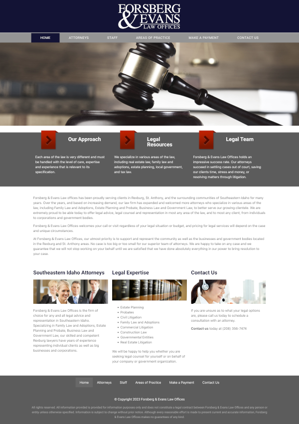
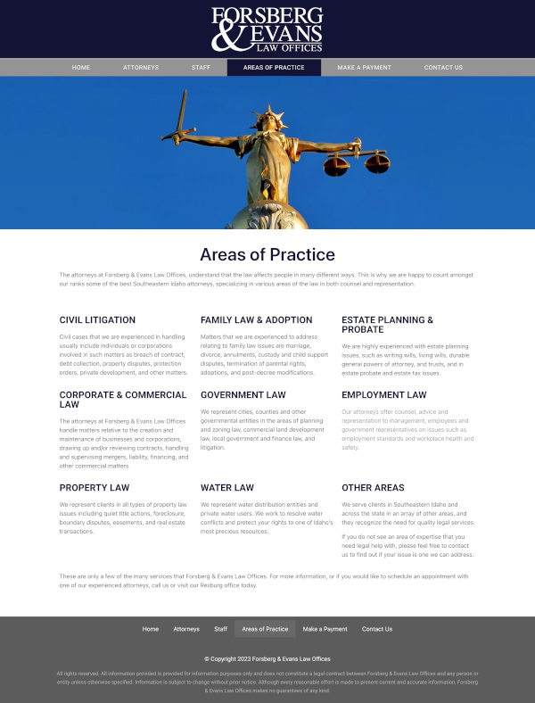
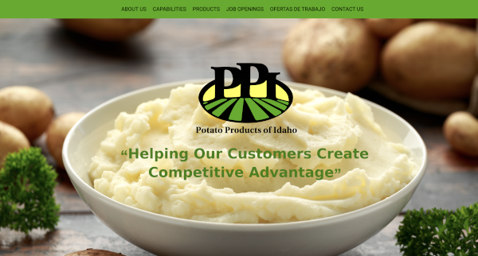
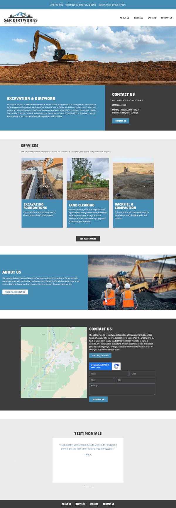
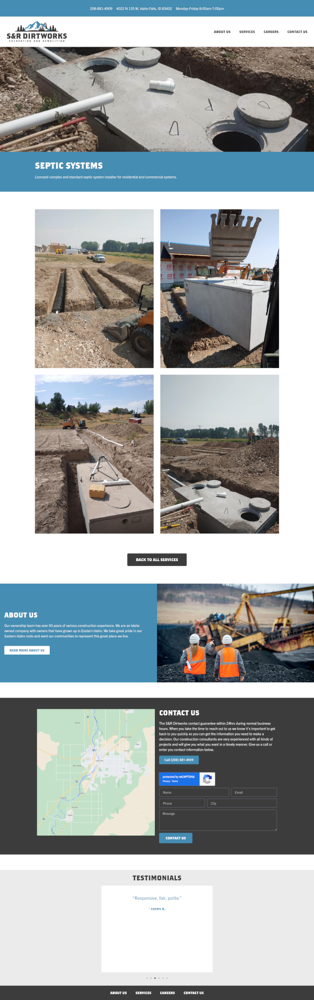
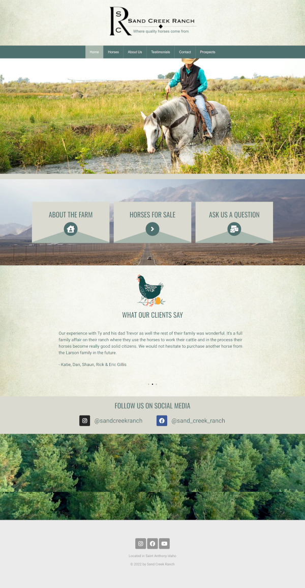
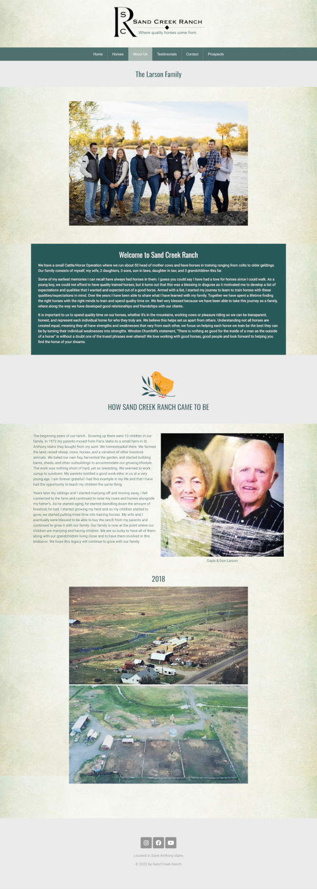
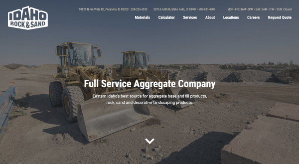
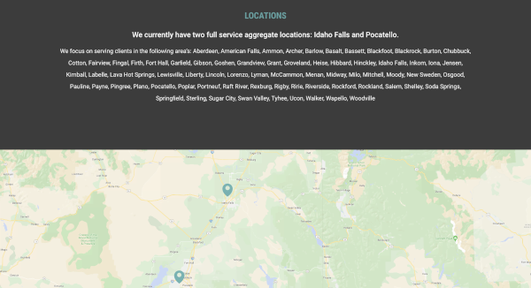

Potato Products of Idaho
Kim was the lead designer and developer of the redesign of Potato Products of Idaho’s main website. She had consistent communication with her client so she was able to follow through with their directions and requests. Kim designed the website in Figma then made it using Wordpress and Elementor.




Sand Creek Ranch
Kim was one of two developers of WordPress recreation of Sand Creek Ranch website. She used their old website as a guide and built the site using WordPress and Elementor.



